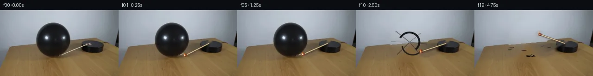

![首帧]()

Round 00
2026-11-05T03:20:23.817946+00:00像素候选变化代码 +287/−0inspection 更新
pixels 6ed1da67d4ac5493 · code 0521e7c55fbf8d8d
查看本轮 generate.py 真实 diff
--- previous/generate.py
+++ current/generate.py
@@ -0,0 +1,287 @@
+from pathlib import Path
+import math
+
+import cv2
+import numpy as np
+from PIL import Image, ImageDraw, ImageFilter
+
+from artifact_io import save
+
+
+ROOT = Path(__file__).resolve().parent
+W, H = 256, 144
+SS = 4
+
+
+def smoothstep(x):
+ x = np.clip(x, 0.0, 1.0)
+ return x * x * (3.0 - 2.0 * x)
+
+
+def rgba_layer():
+ return Image.new("RGBA", (W * SS, H * SS), (0, 0, 0, 0))
+
+
+def composite(frame, layer):
+ layer = layer.resize((W, H), Image.Resampling.LANCZOS)
+ return np.array(Image.alpha_composite(Image.fromarray(frame).convert("RGBA"), layer).convert("RGB"))
+
+
+def pt(x, y):
+ return (int(round(x * SS)), int(round(y * SS)))
+
+
+def clean_initial_match(src):
+ """Remove only the initial diagonal match with OpenCV's local pixel inpaint."""
+ mask = np.zeros((H, W), np.uint8)
+ cv2.line(mask, (143, 99), (198, 70), 255, 5, cv2.LINE_AA)
+ cv2.ellipse(mask, (145, 98), (5, 4), -28, 0, 360, 255, -1, cv2.LINE_AA)
+ cv2.ellipse(mask, (194, 73), (6, 4), -28, 0, 360, 255, -1, cv2.LINE_AA)
+ # Avoid replacing a broad area; a three-pixel halo catches antialiasing only.
+ mask = cv2.dilate(mask, np.ones((3, 3), np.uint8), iterations=1)
+ return cv2.inpaint(src, mask, 4, cv2.INPAINT_TELEA)
+
+
+def make_empty_plate(src, clean_match):
+ """Reconstruct the wall/table hidden by the balloon from only source pixels."""
+ mask = np.zeros((H, W), np.uint8)
+ cv2.ellipse(mask, (115, 66), (39, 42), 0, 0, 360, 255, -1, cv2.LINE_AA)
+ cv2.ellipse(mask, (125, 99), (12, 8), 0, 0, 360, 255, -1, cv2.LINE_AA)
+ cv2.ellipse(mask, (111, 103), (42, 8), 0, 0, 360, 210, -1, cv2.LINE_AA)
+ hard = cv2.dilate((mask > 32).astype(np.uint8) * 255, np.ones((5, 5), np.uint8), iterations=1)
+ plate = cv2.inpaint(clean_match, hard, 9, cv2.INPAINT_TELEA)
+
+ # A low-order fit to visible wall pixels restores the smooth backdrop through
+ # the large upper portion where generic inpainting would otherwise streak.
+ yy, xx = np.mgrid[0:H, 0:W]
+ table_edge = 82.0 - 0.090 * xx
+ wall = yy < table_edge
+ excluded = ((xx > 67) & (xx < 161) & (yy > 18)) | ((xx > 168) & (xx < 231) & (yy > 52))
+ sample = wall & ~excluded
+ xs = xx[sample].astype(np.float64) / W
+ ys = yy[sample].astype(np.float64) / H
+ A = np.stack([np.ones_like(xs), xs, ys, xs * xs, ys * ys, xs * ys, xs ** 3], axis=1)
+ target_x = xx.astype(np.float64) / W
+ target_y = yy.astype(np.float64) / H
+ B = np.stack([
+ np.ones_like(target_x), target_x, target_y, target_x * target_x,
+ target_y * target_y, target_x * target_y, target_x ** 3
+ ], axis=-1)
+ fitted = np.empty_like(src, dtype=np.float64)
+ for c in range(3):
+ coef, *_ = np.linalg.lstsq(A, src[..., c][sample].astype(np.float64), rcond=None)
+ fitted[..., c] = B @ coef
+ fitted = np.clip(fitted, 0, 255).astype(np.uint8)
+ soft = cv2.GaussianBlur((hard.astype(np.float32) / 255.0), (0, 0), 1.8)
+ wall_replace = (soft * wall.astype(np.float32))[..., None]
+ plate = np.clip(plate * (1.0 - wall_replace) + fitted * wall_replace, 0, 255).astype(np.uint8)
+ return plate
+
+
+def draw_match(frame, angle_deg, idx, contact=False):
+ """Draw the attached match, its moving shadow, match head and live flame."""
+ layer = rgba_layer()
+ d = ImageDraw.Draw(layer, "RGBA")
+ a = math.radians(angle_deg)
+ pivot = np.array([195.0, 72.8])
+ length = 56.5
… diff truncated; 200 more lines …